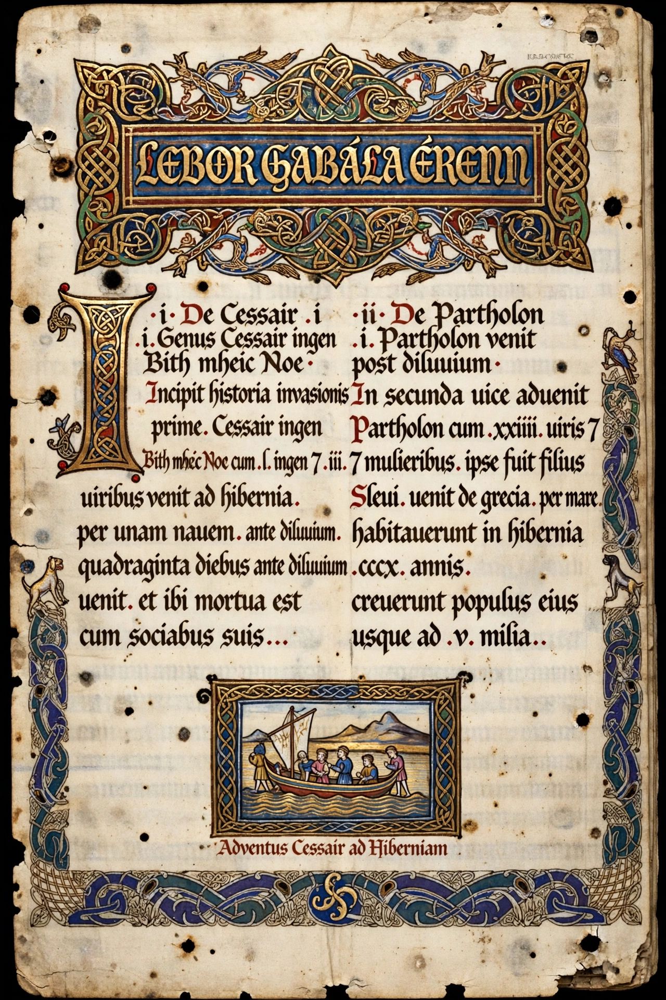

Lebor Gabála Érenn (Middle Irish: "The Book of the Taking of Ireland"; Modern Irish: Leabhar Gabhála Éireann) is a Middle Irish collection of poems and prose narratives recounting the mythical origins and history of the Irish people from the creation of the world to the Middle Ages. Compiled in the 11th century, it describes a series of six invasions (or "takings") of Ireland by successive peoples, culminating in the Milesians, ancestors of the Gaels.

The Book of Invasions survives in manuscripts including the Book of Leinster.
| Lebor Gabála Érenn | |
| Language | Middle Irish |
|---|---|
| Date | 11th century (composite, from earlier material) |
| Subject | Mythical invasions of Ireland |
| Survives in | Book of Leinster, Book of Ballymote, Great Book of Lecan, etc. |
| Standard edition | R. A. S. Macalister (1938–56) |
The text begins with a biblical framework — tracing the Gaels' ancestry to Noah through Scota, daughter of an Egyptian pharaoh, and Goídel Glas, eponymous inventor of the Irish language — then narrates the takings of Ireland: the people of Cessair before the Flood; the people of Partholón; the people of Nemed; the Fir Bolg; the Tuatha Dé Danann, the godlike race who brought four treasures (the Lia Fáil, the spear of Lugh, the sword of Nuada, and the cauldron of the Dagda); and finally the Milesians, sons of Míl Espáine, who defeated the Tuatha Dé at Tailtiu and divided Ireland between the world above ground and the sídhe mounds below.
The Lebor Gabála is a work of synthetic pseudo-history by Christian scholars, blending native tradition with biblical and classical learning to give the Irish a pedigree as grand as those of the Romans or Israelites. It framed Irish dynastic genealogies for centuries and supplied Geoffrey Keating's 17th-century Foras Feasa ar Éirinn; its narrative remains foundational to Irish mythological tradition, though modern scholars read it as ideology and literature rather than history.